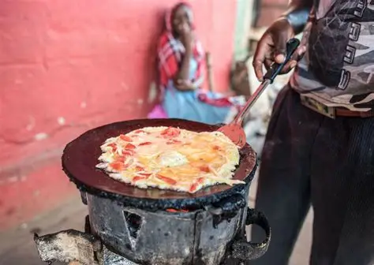
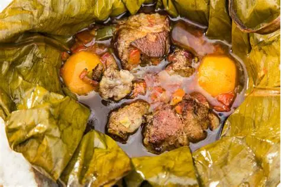
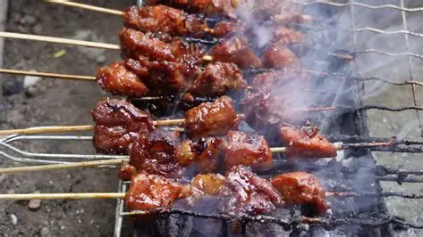

Experience Uganda's rich traditions, tribes, music, dances and delicious local dishes.
Discover the flavors of Uganda with our selection of traditional dishes and local delicacies.

Popular Street FoodUganda's famous street food made with eggs and chapati.
A traditional dish made from steamed green bananas.

Traditional DishA traditional dish made from steamed plantains and meat.

Popular Street FoodA delicious roasted dish made with grilled meat and enjoyed countrywide.
Before you visit Uganda, here are some important things to keep in mind: